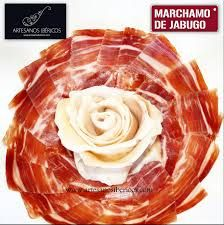
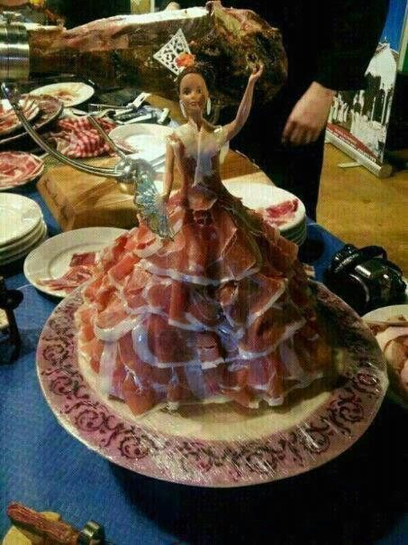
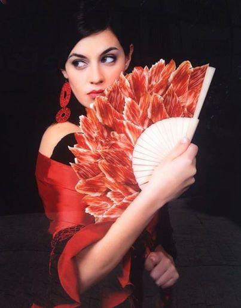
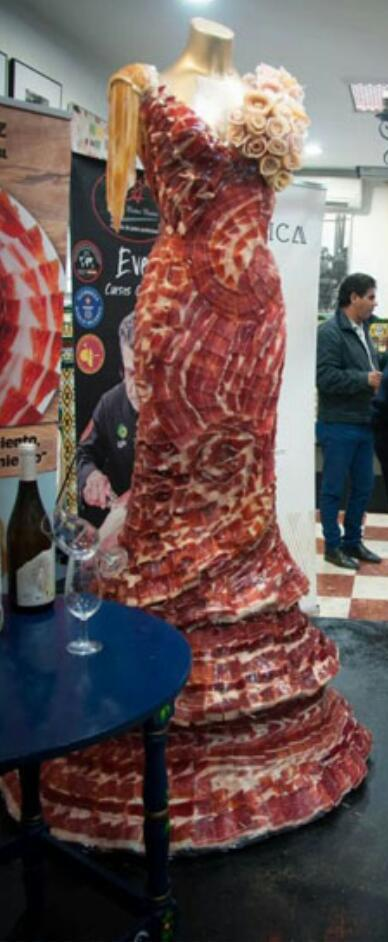

LLama al 645 61 71 57
 |
Pida a su servicio un buen plato de un delicioso y riquísimo jamón de bellota servido en un plato con una bonita rosa en medio con el que puede disfrutar de una gran ración con su familia, Amigos, Novia, Novio o donde usted desee. |
|  |
Si quiere un poco mas de glamour y profesionalidad pida a su servicio nuestra flamenca con sus volantes repleto de nuestro gran delicioso y riquísimo jamón cortado por uno de los mejores cortadores de jamón que hay en sevilla. |
|  |
Si lo que quiere es un accesorio donde servir nuestro gran y delicioso jamón también se lo podemos servir en un abánico bonito de feria para que vean que nuestro jamón no es solo es comida si no también arte. |
|  |
Y por último si lo que quiere es ir por la puerta grande y lucir un gran traje lleno de nuestro gran, delicioso, riquisimo y mejor jamón esta es su oportunidad porque le haremos un gran traje de flamenca lleno de éste para que sepa todo el mundo que el jamón que prueban no es solo el mejor si no que también es usted. y que esta cortado por uno de los mejores cortadores de jamón de Sevilla y no es ni nada mas ni menos que Luis Gandarias. |